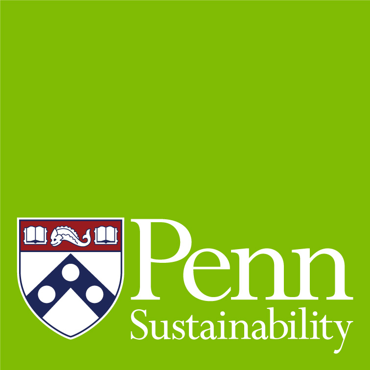
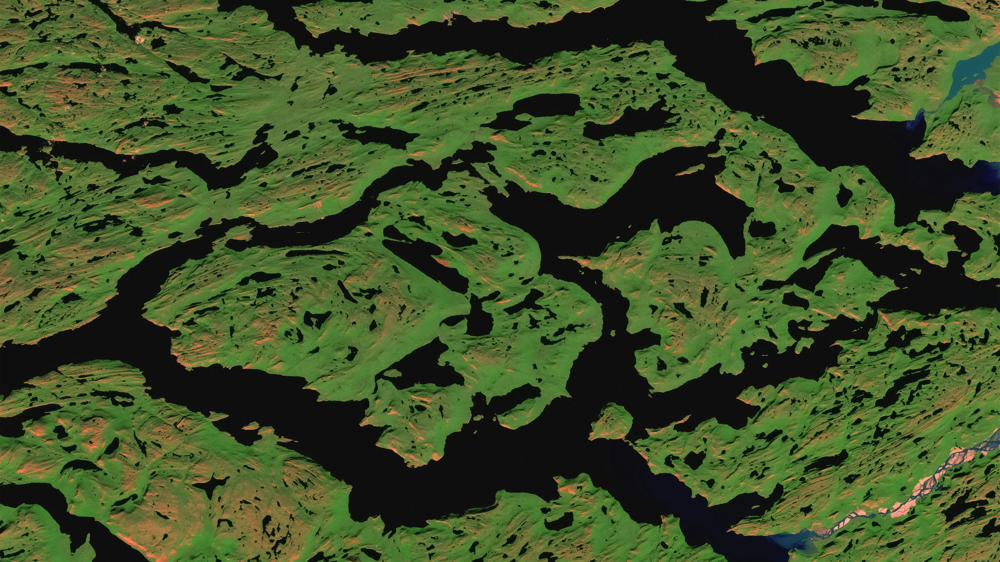
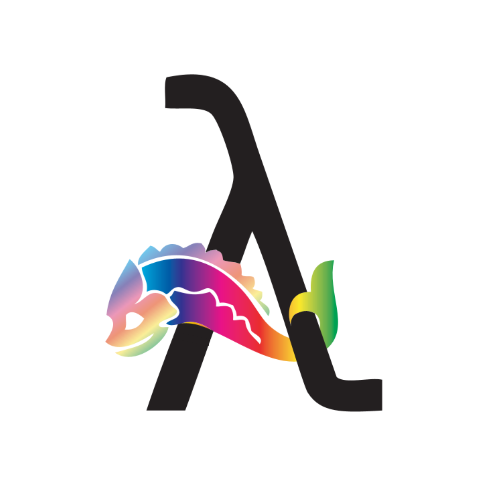
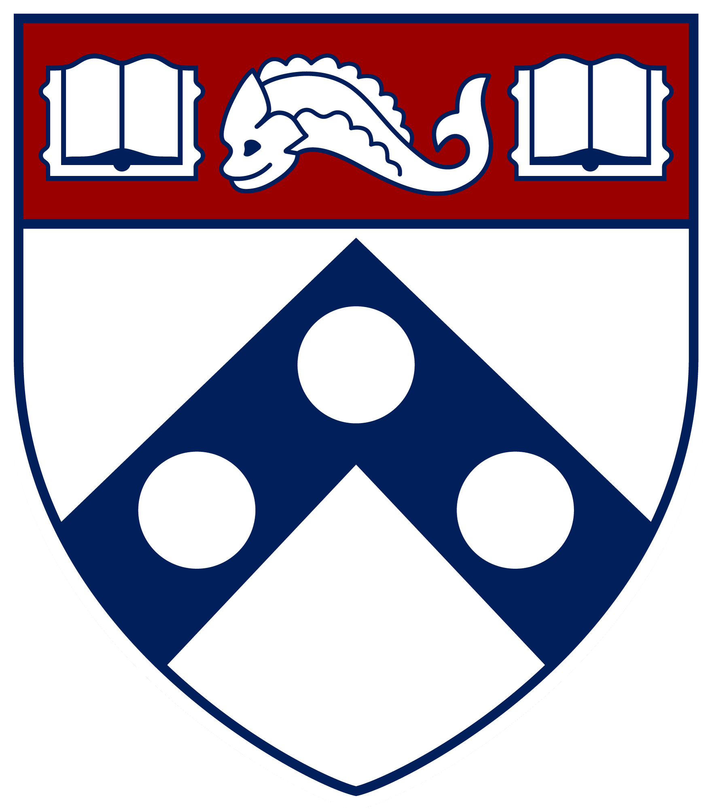
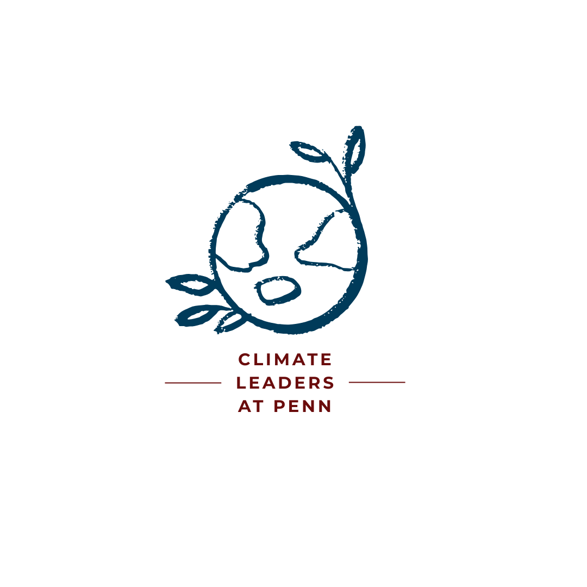

Working at the Penn Sustainability Office
As a sustainability data intern, I'm working to update the office's GIS data and resources, as well as working on a reanalysis of the 2023 Commuter Survey.
I love maps
and lots of other stuff

It's good to see you here!
My name is Mel, and I'm currently a graduate student at the University of Pennsylvania (aka UPenn or Penn). Though I'm getting my Masters in Environmental Studies, I also have a deep love for GIS, cartography, data visualization, and spatial analysis. I feel very grateful that I've been able to combine these two passions during my time at Penn, and it's solidified my desire to work in the GIS and data science field.
I'm currently looking for roles and projects where I can use my creative and technical skills to solve real issues. You can learn more about me on this site, and please feel free to reach out. I want to meet you too!
I have A LOT of interests, and a decent number of skills! Here are a few of the more relevant ones:
...and more! Check out my resume for the full picture.
Along with being a full time graduate student and working on my capstone project, I'm also heavily involved in other projects and organizations!

As a sustainability data intern, I'm working to update the office's GIS data and resources, as well as working on a reanalysis of the 2023 Commuter Survey.

As president of the umbrella LGBTQ+ graduate student organization at Penn, I'm working with the Graduate Student Center and school-specific groups to create community and advocate for the queer community on campus.

Selected as one of two graduate student representatives, I serve with multiple high-level administrators (including 3 Vice Provosts, 2 Vice Presidents, and a Dean) charged with improving the student experience at Penn.

CLP is a fellowship program for graduate students across Penn, pairing students with organizations seeking help on climate related projects. Past partners have included FMC, Philadelphia Zoo, Penn Vet, and Philly TREEs. Along with my co-chair, I work on recruiting capstone projects, partners, and fellows, in addition to planning various social and networking events intended on enhancing the fellow's experience.